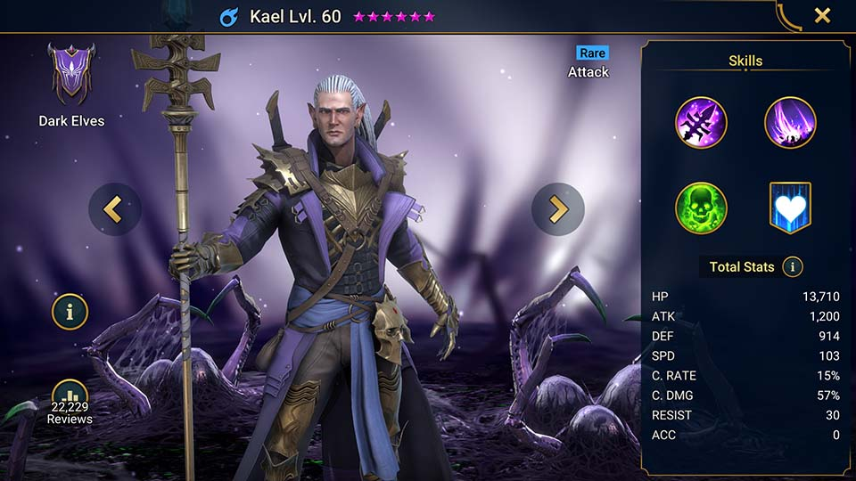

| La map de campagne | La map secondaire | La map de clan |
|---|---|---|
| La map de campagne sert pour les missions principales du jeu ou les guerriers doivent se battre en priorité (le mode histoire du jeu). | La map secondaire mission secondaire sert pour gagner des récompenses secondaires, mais qui peuvent tout de même être intéressantes | La map de clan celle-ci sert pour combattre les ennemies pour avoir des récompenses pour construires des accesoires ou équipements intéressants. |
| Beaucoup de récompenses mais les arterfacts sont peu efficaces contre les ennemies. | Par contre la map des missions secondaires pour tes guerriers c'est top car beaucoup de récompenses peuvent les rendre bien plus fort. | Pour la map de clan si objectifs rempli tu peux gagner des cristaux spéciaux pour fabriquer des arterfacts à la forge. |
| En résumé la map de campagne c'est surtout pour gagner des arterfacts basiques, mais qui serons de moins en moins utile en avançant dans le jeu. | En bref, La map secondaire peux être intéressant à exploiter pour gagner des récompenses incroyables, pour ancre du dragon si vous gagnez des equipements vol de vie, équiper votre guerrier avec il sera bien plus efficace en combat. | Pour la map de clan ici si tu arrive à gagner des niveau tu peux fabriquer des accesoires de rang 4 et 5. |
Voici le Site officiel
Petit bonus je vais vous montrer mon personnage que j'ai choisi sur mon jeu celui que j'ai réssucité . il se nomme Kael le voici:
